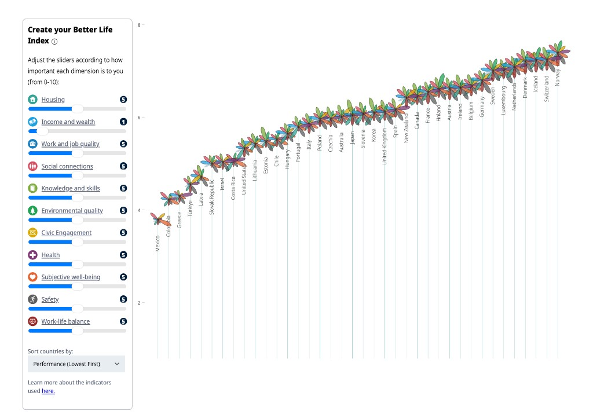
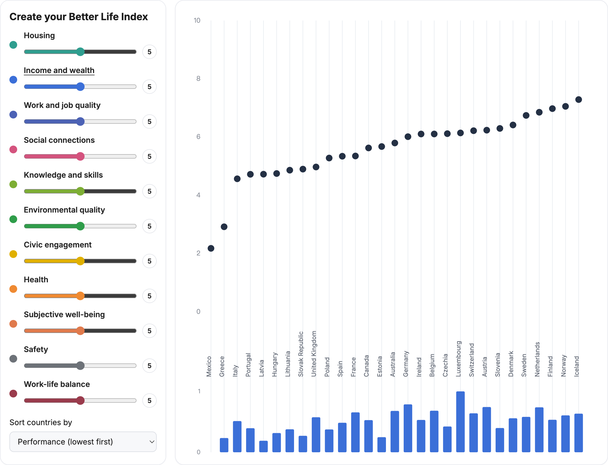

STATS 401 individual project · Tianyao Wang

The OECD Better Life Index compares well-being in the 38 OECD member countries across eleven dimensions: housing, income and wealth, work and job quality, social connections, knowledge and skills, environmental quality, civic engagement, health, subjective well-being, safety, and work-life balance. Each country is drawn as a flower. Its height on the vertical axis is the country’s index under the reader’s own weights, and each coloured petal is the country’s score on one dimension. Sliders on the left set the importance of each dimension from 0 to 10, and a menu sorts countries by performance.
The data behind the index come from the OECD Well-being Database, which reports national indicators for each dimension from surveys and official statistics.
Each column is one country. Dot height is the weighted score from the sliders; the dot’s colour is that country’s strongest dimension. The strip of eleven marks under each name is the full profile, same colours as the sliders. Click a dimension name to select it; the bar under every country then shows that dimension, taller meaning better. Sort by overall performance or by the selected dimension. Hover a dot for all eleven scores, or a strip or bar for a single value.
The redesign reads data/bli-headline.csv, built by scripts/prepare_data.py from the OECD Well-being Database. It keeps one headline indicator per dimension, the latest total-population value, and the 29 countries that report all eleven.
OECD.WISE.WDP,DSD_HSL@DF_HSL_CWB. SDMX CSV downloadThe OECD’s “Create your Better Life Index” (Figure 1) ranks the 38 OECD members on well-being. Countries are placed left to right; each is a flower whose height is its index and whose eleven petals, one colour per dimension, show its score on housing, income, jobs, community, education, environment, civic engagement, health, life satisfaction, safety and work-life balance. Readers weight each dimension from 0 to 10 with sliders. The message is that well-being has many parts, and which country looks best depends on what the reader values. The audience is the general public rather than analysts. The tasks are to set weights, rank countries and find the extremes, compare countries on one dimension, and see where a single country is strong or weak.
Strength 1. The overall ranking uses position on a common scale. Countries are sorted, each flower sits on a vertical drop line, and the rising curve shows at once that Mexico and Colombia score low and Norway, Switzerland and Iceland high.
Strength 2. Controls and marks share one colour code. Each slider is labelled with an icon in its petal’s colour, and moving it moves the flowers immediately, so the personalisation task gets direct feedback.
Weakness 1: one dimension cannot be compared across countries. Petals radiate at different angles from centres at different heights, with no common baseline. To compare safety, a reader must find the grey petal in 38 flowers and judge unaligned lengths, which people estimate far less accurately than positions or aligned lengths (Cleveland and McGill 1984). Comparing a dimension is a core task, so it should use aligned bars.
Weakness 2: the glyph is overloaded and overlaps. The flower marks the overall score and carries eleven petals around it. Where scores are close, as in the upper right, neighbouring flowers overlap, hiding both the exact height and the petals. Country names hang just below each flower, so they follow the curve instead of a shared line, and the vertical axis has no title. The score should be a plain mark, with labels on one baseline.
Weakness 3: eleven hues at once. Hue suits categories, but only about seven to ten can be told apart reliably, and several here are close, such as the two greens or the reds for social connections and work-life balance. With every petal coloured, colour becomes texture rather than information. Only the dimension being examined needs colour.
Decision 1: the flower becomes a dot. Each country’s weighted score is a single dark dot on a 0–10 axis. Position is the most accurate channel for magnitude, and a dot does not cover its neighbours. This addresses Weakness 2: order and gaps can be read without occlusion, and country names sit on one line below the dots.
Decision 2: one selected dimension as aligned bars. Clicking a dimension name selects it, and a bar under every country shows its score from a shared baseline, in the same column as the dot. Two new sort options order countries by that dimension, ascending or descending. This addresses Weakness 1: “which country feels safest?” is read along one row of bars.
Decision 3: one hue at a time. Bars take the colour of the selected dimension’s swatch, and the dots stay neutral. This addresses Weakness 3 and keeps the colour link between controls and chart that Strength 2 describes; each slider here takes its dimension’s colour.
After the redesign it is easier to compare every country on one dimension, rank countries by that dimension, and read the overall order where scores are close. Tooltips give each bar’s raw value, unit and year. The trade-off is that a country’s full eleven-dimension profile is no longer visible at once; the reader switches dimensions instead. The data differ from the OECD tool. Each dimension uses one headline indicator, scaled 0–1 across the 29 countries with complete data, with lower-is-better indicators such as housing-cost overburden reversed; long hours in paid work stands in for work-life balance. The scores are therefore not the OECD’s published index. Colombia, Türkiye, Israel, Costa Rica, the United States, Chile, Japan, Korea and New Zealand are missing, indicator years differ, and weighted dots can still cluster because they are averages.
